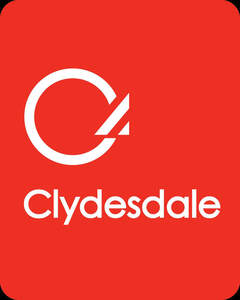

Trade Mark Journal No.2025/041 10 October 2025
UK00004272730 2 October 2025 (9,16,35,36)
Mark 1

Mark 2
- Class 9
- Computer software for facilitating or enabling access to loan and financial services; computer software and software upgrades supplied on-line from computer databases, computer networks, global computer networks or the Internet electronic interface providing loan and financial services; interactive software application delivered online through a web-browser, being a downloadable application; app delivered to any computing device including desktop, laptop and tablet computers as well as mobile devices; mobile phone and electronic device app or interface software; downloadable computer software for accessing, managing, controlling and interacting with finances, loans and sending of payments; mobile phone app for financial, home loan and insurance services, sending payments and for managing financial and loan affairs; bank cards, encoded cards, smart cards and multi-function cards, charge cards; magnetic data carriers; encoded cards, integrated circuit cards, all for financial transactions and financial services; cash dispensers,; data processing apparatus; computer software to enable searching of data; computer software for facilitating or enabling access to business services, financial services, loan services, information services and e-mail services; app for a mobile communications device; electronic publications, newsletters, magazines, periodicals, pamphlets, leaflets, instructional materials and teaching materials, provided on-line from computer databases, computer networks, global computer networks or the Internet (including web pages and web sites), not in relation to horses; interactive computer software and interactive computer discs; downloadable instructional materials and teaching materials, provided on-line from computer databases, computer networks, global computer networks or the Internet (including web pages and web sites).
- Class 16
- Paper and cardboard; printed matter and printed publications, not in relation to horses; advertising materials; stationery; office requisites; brochures, vouchers; printed publications relating to insurance, financial affairs, monetary affairs, real estate affairs, advertising and business management and administration; cheques, cheque books, paying-in books; bank cards, cash cards, cheque cards, debit cards, credit cards, charge cards; instructional and teaching materials; wrapping and packaging materials.
- Class 35
- Business advice and information; business planning; business appraisals; business management assistance; business administration and management services; business support services, namely, business advices, business consulting, business analysis, business supervision, business management assistance, business assistance, business appraisals, business planning, business advisory services; economic forecasting and analysis for business purposes; profit and cash flow forecasting, analysis and planning, all being economic forecasting services; personnel management and employment consultancy; book-keeping and accounting services; tax assessment preparation; provision of information relating to tax; tax consultancy and planning services; business networking services; procurement of goods and services on behalf of businesses; purchasing of goods and services for other businesses; procurement services relating to business equipment, office supplies and office equipment; data processing services; computer database management, data processing, data verification and file management; computerized business information retrieval; credit card registration services; computerised record keeping, accounting and database management services; business advice and information, provided by telephone or provided on-line from a computer database, computer network, global computer network or the Internet; operation, organisation and supervision of user incentive schemes relating to the use of credit cards, store cards, charge cards, cash cards, debit cards, payment cards, financial cards and purchase card; organisation, operation and supervision of loyalty programmes and of sales and promotional incentive schemes; advisory, consultancy, information, helpline and customer care services relating to all of the aforesaid services.
- Class 36
- Financial and banking services; retail banking services; business and personal banking services; home loan services; home and mortgage insurance; financial affairs; monetary affairs; real estate affairs; fundraising and sponsorship; life assurance services; real estate services; valuations and financial appraisals of property; property acquisition and property management services; acceptance of deposits; monetary transfer; banking payment services; clearing services; account debiting services; administration of financial affairs; trustee services; mutual funds services; bill payment services; cash management services; factoring services; invoice discounting services; credit brokerage; financing of loans; making of loans against security; mortgage services; advisory, consultancy, information, helpline and customer care services relating to all of the aforesaid services.
Clydesdale Bank plc
Representative: Murgitroyd & Company